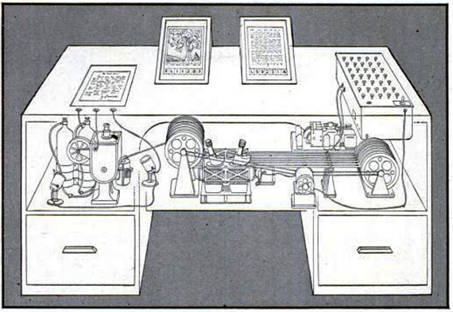

Week 3 Reflection
As We May Think - Vannevar Bush, 1945
Dr. Vannevar Bush was a true intellectual pioneer for society. Whether it was his discussion through science, film, technology, or any subject at that matter, Bush was able to identify possible changes within human capabilities. I believe his main synopsis from As We May Think was that humans must thrive to expand their knowledge of science in order to reach the full potential that he envisioned. It is really interesting to note that Bush was very foreseeing throughout the entirety of the article. Although his words were spoken with much vagueness, Bush was able to envision many years ahead of his time for which technology would expand in the future. Personally, it was astonishing reading about all the topics covered and the level of vocabulary and intricacy he had considering the era the article was written in.
Bush was able to pull from his knowledge of the current era and predict that possibilities for improvement were inevitable. With the examples of camera lenses or machines used for arithmetical computations, Bush described these types of technology to be “still in embryo.” To be able to acknowledge that the highest form of technology at the time was something that is still in the beginning phases of potential and create this mindset that more knowledge could be attained is bizarre. However, it was necessary to “make more accessible our bewildering store of knowledge” - which was a large part of Bush’s ideals. It seemed as if Bush was never living within his present and always viewing the world of science as what it could be, especially with his idea of a “memex,” essentially predicting the future of smartphones and computers.
I found that his discussion and explanation on how the human mind operates by association can still be prevalently used today. The human mind will take one idea that is lingering and will snap to another that is suggested by an association of thoughts coming from the intricate system in the human brain. Whether it be through memory, subconscious or conscious, the human mind learns from this mental process in order to expand its knowledge. I appreciated the wisdom behind some of his words as well: “Man’s spirit should be elevated if he can better review his shady past and analyze more completely and objectively his present problems.” With the help of ever-expanding science in society, humans are able to apply this knowledge in order to “elevate” oneself to a better life. As a precis of Bush’s ideas, it seemed to me as if he was telling an audience: Trust in science.

Long Live the Web - Tim Berners-Lee, 2010
Tim Berners-Lee wanted to create a platform in which people are able to share information freely with no distance limit. With any innovation that gains traction and popularity, there will always be users who try to threaten the existence of or take advantage of the situation. The world-wide collaborative platform became a tool for the general public to utilize and build upon, however certain principles must come with something as powerful as the Web. The Web’s principles adhere to the U.S. constitution, the British Magna Carta, documents that enable the public's freedom. The Web was created solely for the purpose of it being freedom to choose for the public. The public was able to set what properties the Web had and didn’t have.
Part of why the Web became so successful and powerful was its universality and decentralization to be able to contribute to the Web. The process of creating an HTML, naming the language with a URL, and setting it up using HTTP allowed anyone to be able to create content for the Web. The characteristics of the Web all promote openness for users. Companies are able to develop themselves further and anyone is able to create a Web site.
The Web is different from the Internet. “The Web is an application that runs on the Internet.” Like many other applications, the Web utilizes the Internet in order to run its virtual spaces of information. The Web’s uniqueness of being universal and open allow people to invent new services. That particular design of the Web differentiates itself from the Internet. Preserving the current state of the principles of the Web guarantees for more opportunities and capabilities. Computer language is always evolving and creating new aspects of the markup languages such as HTML. The Web will continue to serve the people and remain a collaborative project. As humanity advances in technology, what was created prior to new generations will be utilized to build the Web higher than it is now.